Realtime Analytics at


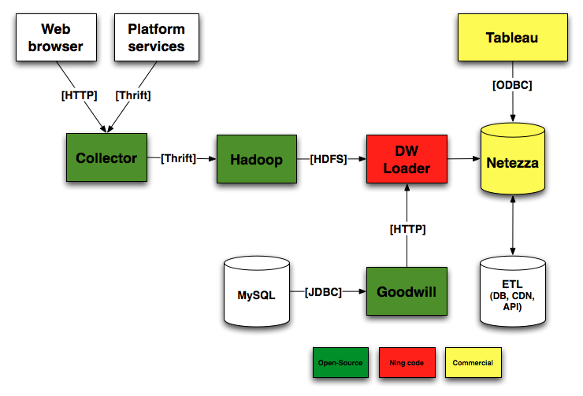
struct JettyLog {
1:i64 event_date,
2:string host,
3:string path,
4:string query,
5:string sourceipaddress,
6:string trace,
7:i64 appid,
8:i64 profileid,
9:string profile,
10:string contenttype,
11:i32 status,
12:i32 responselength,
13:string method,
14:string scheme,
15:i32 timetofirstbyte,
16:string corehostname,
17:string coreipaddress,
18:i32 coreport,
19:string coretype,
20:i32 responsetime
}
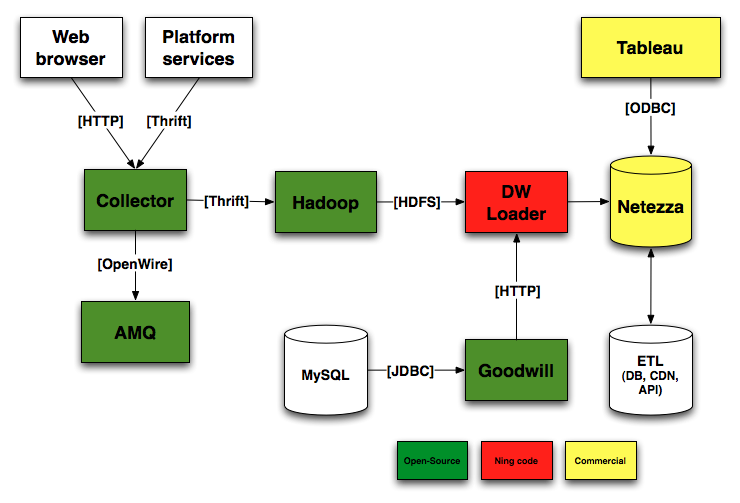
public boolean sendMessage(Event event)
{
boolean success = false;
MessageProducer producer = null;
try {
// Create the destination
final ActiveMQTopic topic = new ActiveMQTopic(event.getType());
// Create a MessageProducer from the Session to the Topic
producer = session.createProducer(topic);
producer.setDeliveryMode(DeliveryMode.NON_PERSISTENT);
producer.setTimeToLive(messagesTTLMilliseconds);
TextMessage message = session.createTextMessage(event.toJSON());
// Tell the producer to send the message
producer.send(message);
}
catch (JMSException e) {
// Connection flacky, maybe got dropped? ActiveMQ enpoint died?
logger.warn("Unable to send message: " + event, e);
requestReconnection();
}
return success
}
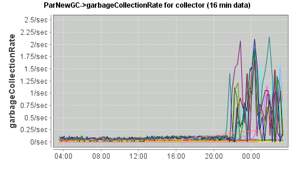
--- ActiveMQSender.java.old
+++ ActiveMQSender.java
@@ -25,6 +23,8 @@
// Connection flacky, maybe got dropped? ActiveMQ died?
logger.warn("Unable to send message: " + event, e);
requestReconnection();
+ } finally {
+ producer?.close(); // One day...
}
return success
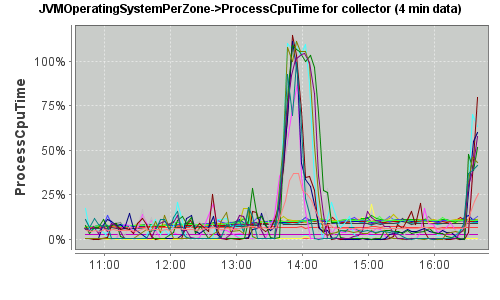
--- ActiveMQSender.java.old
+++ ActiveMQSender.java
@@ -23,7 +23,6 @@
}
catch (JMSException e) {
// Connection flacky, maybe got dropped? ActiveMQ died?
- logger.warn("Unable to send message: " + event, e);
requestReconnection();
}
Among fixes:
Just make sure to have
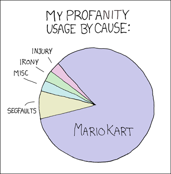
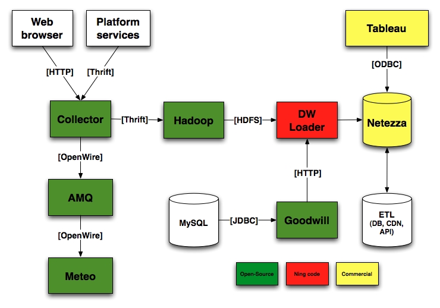
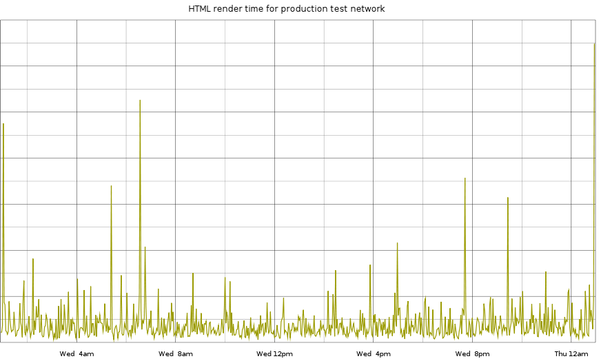
select
html_time
from BazelCSPerfLite
where application='test_network'
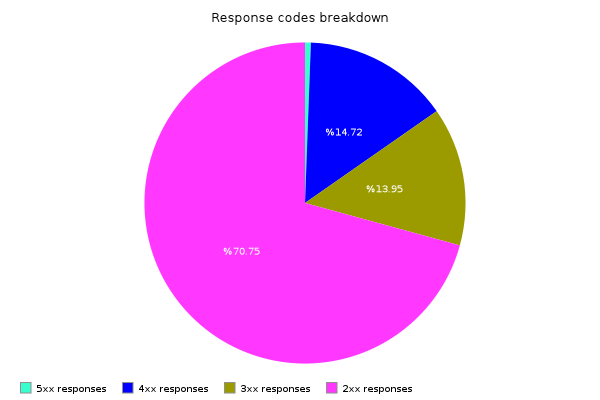
select
istream count(responseCode) as twoxx
from FrontDoorVisit.win:time(10 sec)
where responseCode >= 200 and responseCode < 300
select
istream count(responseCode) as threexx
from FrontDoorVisit.win:time(10 sec)
where responseCode >= 300 and responseCode < 400
select
istream count(responseCode) as fourxx
from FrontDoorVisit.win:time(10 sec)
where responseCode >= 400 and responseCode < 500
select
istream count(responseCode) as fivexx
from FrontDoorVisit.win:time(10 sec)
where responseCode >= 500
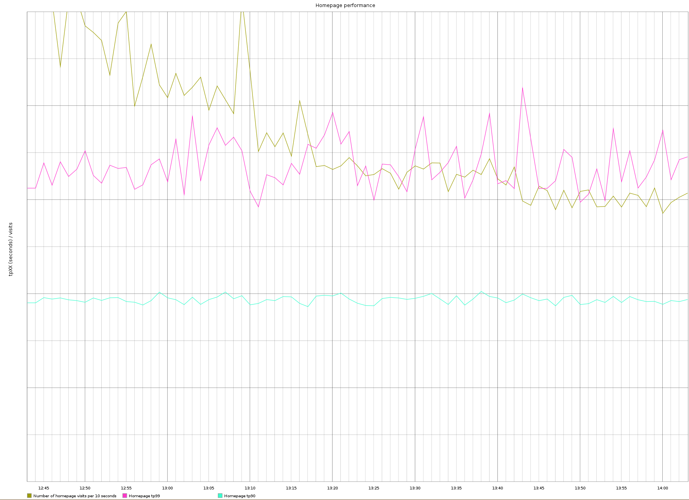
select
istream tp(90, timeToFirstByte) as tp90
, tp(99, timeToFirstByte) as tp99
, count(*) as visits
from FrontDoorVisit.win:time(60 sec)
where responseCode < 300
and (path regexp '($|/?+((?|#|&).*$)?+)'
or path regexp '/main($|/?+((?|#|&).*$)?+)')
public Object getValue()
{
int nbElements = vector.size();
if (nbElements == 0) {
return null;
}
double rank = percentile / 100. * (nbElements - 1) + 1;
int k = (int) rank;
double d = rank - k;
if (k == 0) {
return vector.getValue(0);
}
else if (k == nbElements) {
return vector.getValue(nbElements - 1);
}
else {
return vector.getValue(k - 1) +
d * (vector.getValue(k) - vector.getValue(k - 1));
}
}
<plugin-aggregation-function
name="tp"
function-class="com.ning.metrics.realtime.esper.TPAggregator"/>
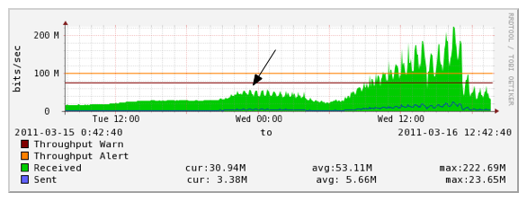
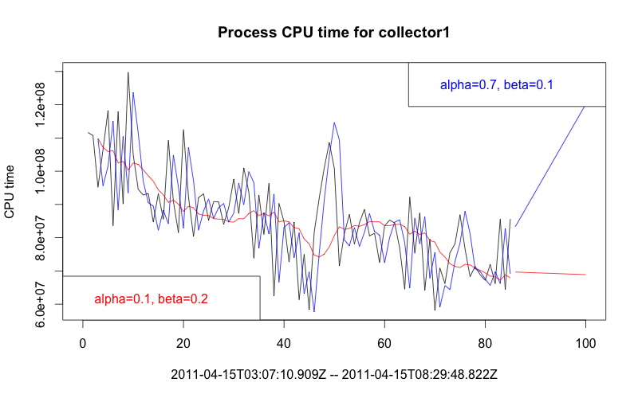
select
lastRaw as raw
, forecast
, deviation
from LoadAverage.ning:predict(SystemLoadAverage, 0.2, 0.01)
Configuration:
<plugin-view
namespace="ning"
name="predict"
factory-class="com.ning.metrics.realtime.esper.HoltWintersViewFactory"/>
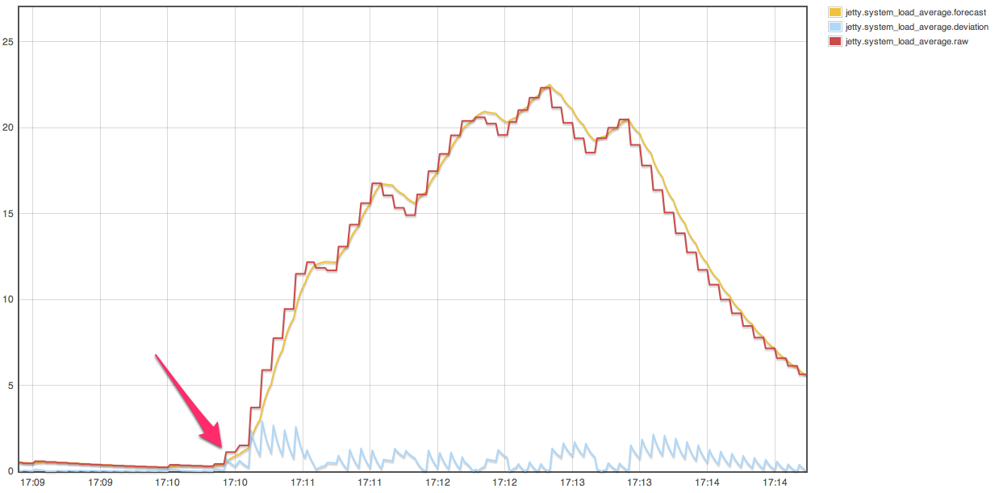
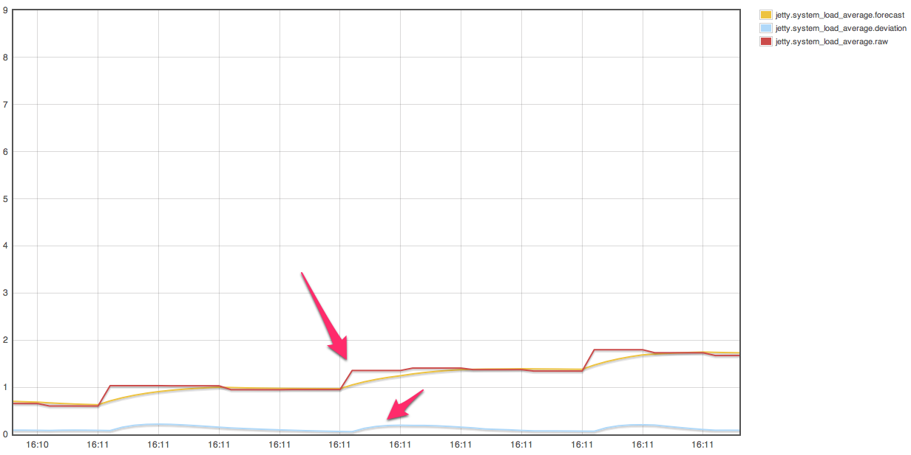
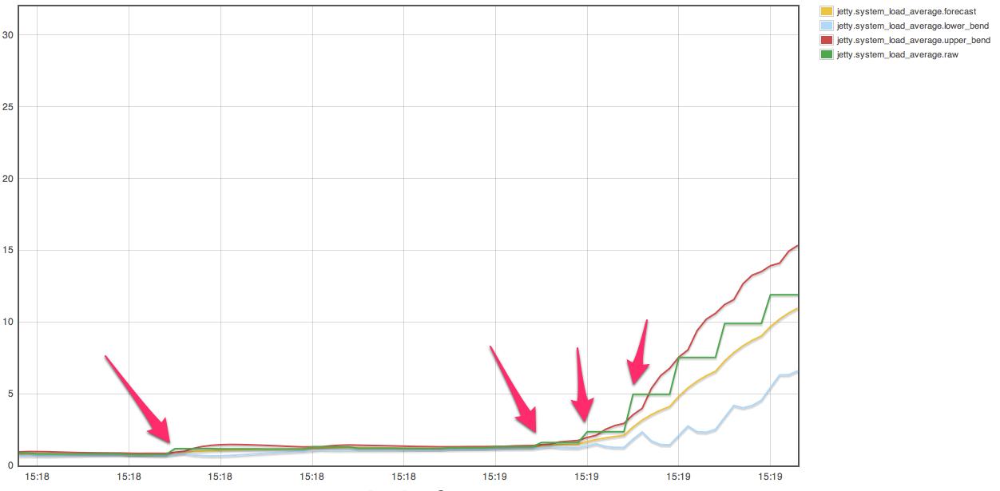
insert into HWStream
select
lastRaw as raw
, forecast
, deviation
from LoadAverage.ning:predict(SystemLoadAverage, 0.3, 0.1);
select timestamp, raw, forecast from HWStream;
select
timestamp
, forecast + 2.5 * avg(deviation) as upper_bend
, forecast - 2.5 * avg(deviation) as lower_bend
from HWStream.win:time(12 sec);
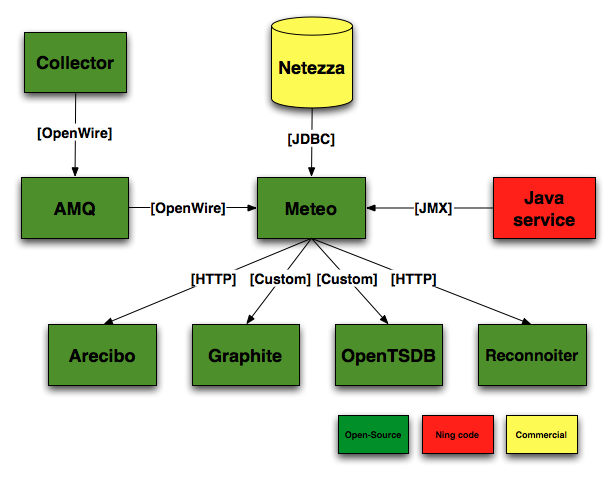